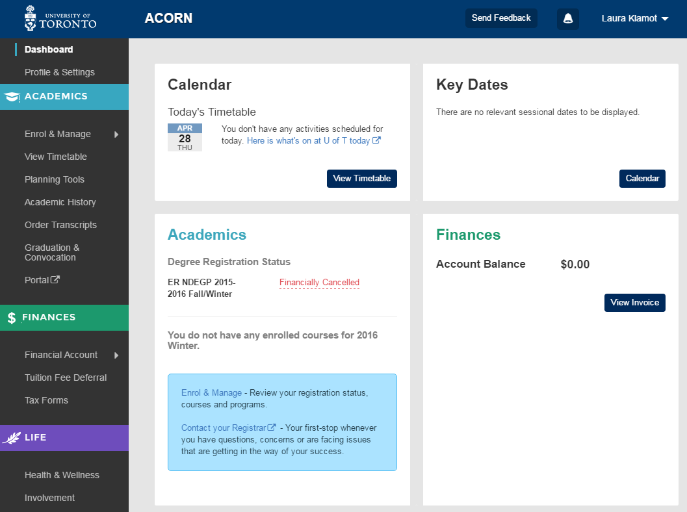

Lean Design Process for Good User Experience
TechKnowFile 2016
Press space to navigate
Who am I?
Jr. UX Designer on the ACORN Team
What's ACORN?
U of T's student-facing information system, and ROSI SWS' replacement.
Cool. What's UX?
User Experience Design about designing useful, usable things while keeping the user's goals in the centre of the process.
It's also about creating enjoyable experiences.
Rad. What's Lean UX?
Lean UX aims to improve user experience in the most efficient and effective way possible.
Focuses: Learning by experimenting, responding to change & building shared knowledge.
Where Do We Start?
1. Define the Problem
- What's the problem you're trying to solve?
- Who is affected by this problem and what are their goals?
Case Study:
ACORN Awards Space
- Problem: Too many awards, too little time.
- Who is affected? Every student at U of T who may be eligible for awards.
Don't worry about solutions just yet.
2. Create a ProtoPersona
Complete Persona: ACORN Awards Space
3. Organize a Sketch Session
6-8-5 Brainstorming Method
6-8-5 Brainstorming Method
- Gather 3 - 4 teammates for 30 minutes.
- Divide paper into 6 sections and provide writing tools.
- Explain the problem and the goal of the session
- Sketch 6 - 8 ideas for 5 minutes
- Share, vote, refine, repeat if necessary.
6-8-5: ACORN Awards Space
Informal Design Critiques
- Frequent informal communication with your team members
- Ask for help when you're blocked; others may have a solution
- Build shared knowledge & understanding
Collaborative Whiteboarding
Build Fidelity to Prepare for Testing

Recommendations: Software & Tools
- Paper Prototyping
- Balsamiq Mockups & InVision


Test Early and Often!
- Tests can be open-ended or task-based
- Major flaws in the design will become obvious
What if You're Not a Designer?
"If you can draw a circle, a square, a triangle, you can draw every interface." - Lean UX
How to Draw Every Interface Ever
Create a Culture Based On Collaboration & Experimentation
The best insights will come from experimenting with new ideas and not being afraid to make mistakes.
Takeaways
- Collaborative sketching exercises help to express intent
- Build shared knowledge by discussing your design progress often
- Be unafraid to go back to the drawing board (literally)
- You don't need to be a designer to design an interface
Thank you!
Figure 1: Alternate uses of a whiteboard
Laura Klamot
laura.klamot@utoronto.ca
(╯°□°）╯︵ ┻━┻